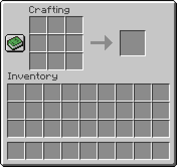

Crafting
The crafting table is a fundamental tool in Minecraft, allowing you to transform basic resources into essential items for survival, building, and exploration. This guide will teach you everything you need to know about using the crafting table to unlock your inner Minecraft crafter!
Getting Started:
1. Gather Wood: Your first task is to collect wood from trees using your bare hands or a weapon. Punching a tree trunk will drop wood blocks.
2. Craft Wooden Planks: Open your inventory (press 'E' by default). Place your wood blocks in the crafting grid. The crafting grid is a 3x3 square where you'll arrange resources to create new items. Each wood block will produce four wooden planks.
3. Build the Crafting Table: With your wooden planks, return to the crafting grid. Arrange four wooden planks in a square pattern to create a crafting table. Drag the crafting table from the crafting grid to your inventory and place it on the ground.
Using the Crafting Table:
1. Open the Crafting Interface: Right-click on the crafting table you placed on the ground. This will open a larger 3x3 crafting grid along with a separate inventory window.
2. The Crafting Grid: This is where you'll arrange your resources to create new items. The recipe for each item will determine the specific placement of resources within the grid.
3. Your Inventory: This window displays all the items you currently have in your possession. Drag and drop resources from your inventory into the crafting grid to use them in recipes.
4. Crafting Output: As you arrange resources in the crafting grid, the crafting output window on the right will display the item you'll create. Ensure you have enough of the required resources to complete the recipe.
5. Crafting the Item: Once you have the correct resources arranged in the crafting grid, click on the crafting output window to transfer the newly crafted item to your inventory.
Items to Craft:
Bed
A Bed, crafted from three wool blocks and three wooden planks, is a vital item for setting a spawn point and sleeping through the night. Simply place the bed down and right-click to set your spawn point. When night falls, cuddling up in bed will skip the night entirely, allowing you to wake up refreshed in the morning. Be sure to place your bed in a safe location, as waking up in danger negates the benefit of a good night's sleep.
Pickaxe
A Pickaxe is a fundamental tool used for mining stone, coal, and other precious minerals. There are several tiers of pickaxes, but for beginners, a wooden pickaxe is a great starting point. Crafted from three wooden planks and two sticks arranged in a specific pattern, the wooden pickaxe allows you to gather stone, a crucial material for crafting further tools and shelter.
Sword
A Sword is your primary weapon for defending yourself against hostile mobs. The wooden sword, crafted from one wooden plank and two sticks in a T-shape, is a basic but effective tool for fending off early threats. As you progress, you'll be able to craft stronger swords from stone, iron, diamond, and other materials.
Chest
A Chest provides much-needed storage space for your accumulated items. Crafted from eight wooden planks in a square formation, chests allow you to organize your belongings and keep them safe. You can even place chests next to each other to create a larger storage unit.
Shovel
A Shovel is a handy tool for scooping up dirt, sand, gravel, and snow. It can also be used to path blocks and harvest certain crops. Crafted from one wooden plank and two sticks in a similar layout to the pickaxe, the shovel is a versatile tool for any new player.
Axe
An axe is an essential tool for gathering wood quickly and efficiently. While your bare hands can break wood, an axe significantly speeds up the process. Crafted from three wooden planks and two sticks in a diagonal pattern, the wooden axe is a crucial tool for acquiring wood, a core resource in Minecraft.
Hoe
A Hoe is used for preparing land for farming. When used on grass blocks, it turns them into farmland, which allows you to plant seeds and grow crops. Crafted from two wooden planks and two sticks in a similar layout to the shovel, the hoe is instrumental in establishing a sustainable food source.
Torch
A Torch provides light in dark areas and deters hostile mobs from spawning nearby. Crafted from one coal block and one stick, torches are essential for illuminating your creations and ensuring your safety at night. Place torches strategically around your shelter and frequently visited areas to keep the darkness and its inhabitants at bay.